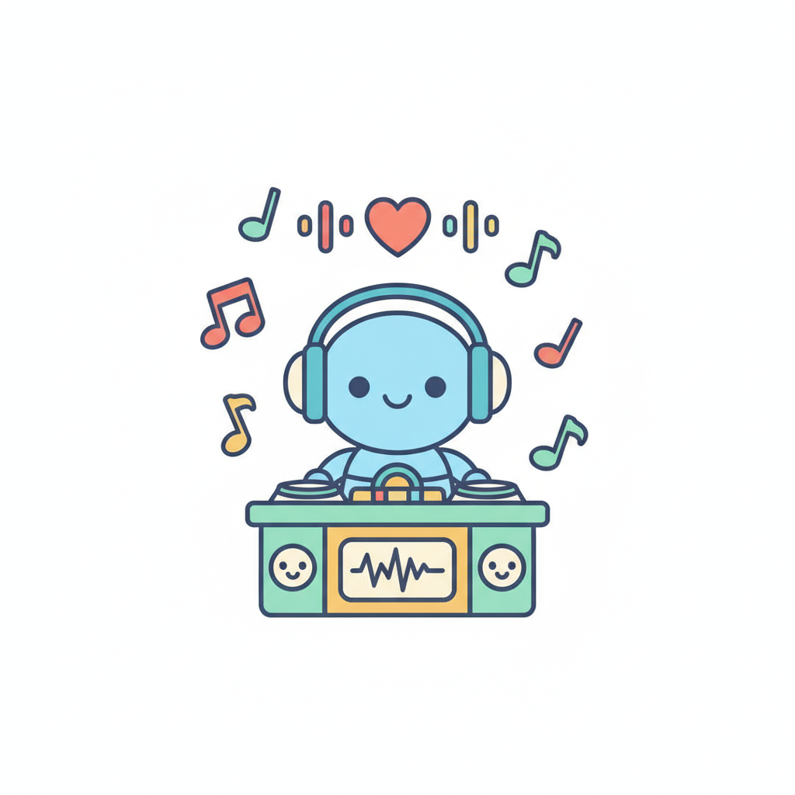

일기 속 단어를 단서로 감정을 추정하고, 어울리는 음악을 추천해요.

엔트리에서 감정 4개를 직접 학습시켜 노래를 추천받아요. 아래 파일을 내려받아 열고, 클래스마다 예시 문장을 붙여넣어요.
엔트리 파일 내려받기 (감정에 따른 노래추천.ent)체육 시간에 우리 모둠이 피구 대회에서 우승해서 정말 신났다 / 선생님이 내 발표를 듣고 훌륭하다고 칭찬해 주셔서 어깨가 으쓱했다 …
제일 친한 단짝 친구가 멀리 전학을 가게 되어서 눈물이 날 만큼 슬프다 / 비가 와서 기대했던 현장체험학습이 취소되어 너무 아쉽고 시무룩해졌다 …
급식 줄을 서고 있는데 다른 반 애들이 대놓고 새치기를 해서 머리끝까지 화가 났다 / 친구가 내 지우개를 빌려 가고선 잃어버렸다고 당당하게 말해서 너무 어이가 없고 열받았다 …
내일 전교생 앞에서 나의 꿈에 대해 발표를 해야 해서 심장이 콩닥콩닥하고 너무 떨렸다 / 열심히 공부를 못 했는데 내일이 바로 기말고사라 밤새 걱정돼서 잠이 안 온다 …
한 문장에 여러 감정이 섞이면 AI는 어떻게 할까요? 학습 뒤 이 문장으로 실험해요.
💡 복합 감정 문장은 속상함(슬픔)과 뿌듯함(기쁨)이 함께 있어요. AI가 하나만 고른다면, 왜 그럴지·사람은 어떻게 판단할지 이야기해 봐요.